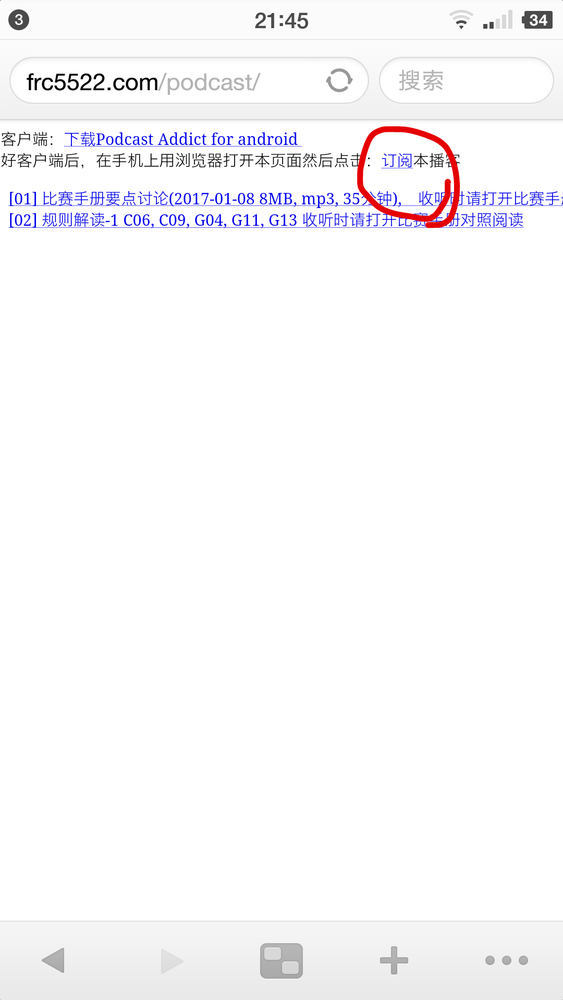
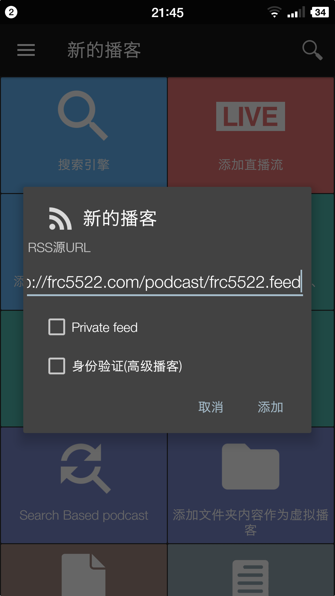

安装客户端及订阅播客
播客客户端：下载Podcast Addict for android
安装好客户端后， 在手机上用浏览器打开本页面：
播客列表
请用播客客户端订阅收听。
- #5: 2017 规则解读－第6章：行为规范
- #4: 2017 规则解读－第5章：安全规则
- #3: 2017 规则解读－第4章：对战
- #2: 2017 Steamworks 规则解读－1
- #1: 2017 Steamworks 规则要点讨论
订阅步骤
第一步：先下载安装上面的播客app
第二步：在手机上用浏览器打开本网页， 点击上面的『订阅』链接

第三步：浏览器会自动跳转到播客app, 再点『添加』就可以了
